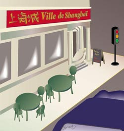
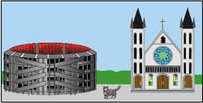

In this lesson, you will learn to describe people and things and to
specify their location. You will also learn basic phrases used in
giving directions.
Pronunciation
closed é, closed o
Structure
Il y a vs. voilà
Review of the contractions au, aux, du, and
des
Demonstratives: ce, cet, cette, and
ces
Descriptive adjectives: agreement and position
Common prepositions
Introduction En Français
Fonctions
Décrire en utilisant des adjectifs
Préciser l’objet auquel on veut faire allusion
Demander des consignes d’orientation
Préciser la position des objets
Prononciation
é fermé, o fermé
é fermé, o fermé
Structure
Il y a et voilà
Les contractions: au, aux, du et des
Les adjectifs démonstratifs: ce, cet, cette et
ces
Les adjectifs descriptifs - position et accord
Les prépositions
1. Conversation
Les trois copains quittent le café, mais il y a quelque chose
qui manque.
quitter
to leave
Les trois copains quittent le café.
The three friends leave the café.
quelque chose
something
manquer
to be missing
qui manque
which is missing
quelque chose qui manque
something missing
Les trois copains quittent le café, mais il y a quelque chose
qui manque.
The three friends leave the café, but theres something
missing.
Régine
Oh, mince!
mince
darn (colloquial expression of annoyance)
Oh, mince!
Darn it!
Daniel
Qu'est-ce qu'il y a?
Quest-ce quil y a?
Whats the matter?
Régine
Je ne trouve pas mon sac!
trouver
to find
Je ne trouve pas
I dont/cant find
le sac
bag
Je ne trouve pas mon sac!
I cant find my bag!
Daniel
Comment? Tu n'as pas ton sac? C'est impossible.
Comment?
What? (Expresses surprise, or indicates that you didnt
understand, or that you want the other person to repeat.)
impossible
impossible
Comment? Tu nas pas ton sac? Cest impossible.
What? You dont have your bag? Thats impossible.
Régine
Oh, là là! Je garde mon passeport et mes papiers dans mon sac!
Oh, l l!
Oh no!
Garder
to keep
le passeport
passport
les papiers (masc. plural)
official papers, documents
Oh, l l! Je garde mon passeport et mes papiers dans mon sac!
Oh no! I keep my passport and my (official) papers in my bag!
Paul
Il est de quelle couleur, ton sac? Il est bleu, n'est-ce pas?
la couleur
color
quelle
what (before a feminine singular noun)
de quelle couleur?
what color?
bleu
blue
De quelle couleur est ton sac? Il est bleu, nest-ce pas?
What color is your bag? Its blue, right?
Régine
Non, il n'est pas bleu. Il est vert.
vert
green
Non, il nest pas bleu. Il est vert.
No, it isnt blue. Its green.
Daniel
Il y a un sac vert sous l'autre table.
un sac vert
a green bag
sous
under
autre
other
sous lautre table
under the other table
Il y a un sac vert sous lautre table.
Theres a green bag under the other table.
Régine
Oui, je vois, mais ce n'est pas mon sac.
daccord
agreed, yes, OK
ce nest pas
its not (followed by a noun with an adjective)
Oui, je vois, mais ce nest pas mon sac.
Yes, I see, but its not my bag.
Paul
Il y a peut-être des papiers dans ce sac avec le nom du
propriétaire.
peut-tre
maybe
ce
this/that
ce sac
this/that bag
le nom
the name
le propritaire
owner
with the owners name
avec le nom du propritaire
Il y a peut-tre des papiers dans ce sac avec le nom du
propritaire.
Maybe there are papers in that bag with the name of the owner.
Régine
Attends, je vais regarder. Oui, en effet, il y a un nom et une
adresse. Elle s'appelle Éliane Kumassi. Elle habite à Paris,
15, rue de Turenne.
regarder
to look at, to look
je regarde
I look, Im looking
en effet
in fact, indeed, actually
ladresse (fem.)
address
il y a un nom et une adresse.
Theres a name and address.
elle sappelle
her name is
habiter
to live, reside
Paris
in Paris
Elle habite Paris.
She lives in Paris.
Attends, Je vais regarder. Oui, en effet, il y a un nom et une
adresse. Elle sappelle liane Kumassi. Elle habite Paris, 15,
Rue de Turenne.
Im looking. Yes, indeed, theres a name and address. Her name
is liane Kumassi. She lives in Paris at 15, Rue de Turenne.
Paul
Cette Éliane a ton sac, c'est sûr. À la rue de Turenne, alors!
sr
sure
cest sr.
its sure, definite, certain.
Cette liane a ton sac, cest sr. la rue de Turenne, alors!
liane has your bag, thats for sure. So, (were off) to the rue
de Turenne!
Daniel
Monsieur, s'il vous plaît. Pour aller à la rue de Turenne?
aller
to go
pour aller
in order to go; how can we get to?
Monsieur, sil vous plat. Pour aller la rue de Turenne?
Waiter, please, how can we get to the rue de Turenne?
Garçon
C'est l'autobus vingt-neuf. L'arrêt est là-bas, au coin de la
rue, devant le cinéma.
lautobus (masc.)
bus
vingt-neuf
twenty-nine
larrt (masc.)
the stop; bus stop
le coin
the corner
au coin
at the corner
au coin de la rue
at the (street) corner
au coin de la rue
at the (street) corner
l-bas
over there
devant
in front of
le cinma
the movie theater
devant le cinma
in front of the movie theater
Cest lautobus vingt-neuf. Larrt est l-bas, au coin de la rue,
devant le cinma.
Its bus twenty-nine. The stop is over there, at the corner, in
front of the movie theater.
In France, as in other European countries, people are required to
carry various official documents, including their national identity
card, which has a photo and gives their name, address, profession,
etc.
Rue de Turenne
The three friends are at a café near the Gare St. Lazare in
northwestern Paris. The rue de Turenne is a street in the seventh
arrondissement of Paris, to the east of the train station. The
route 29 bus connects the Gare St. Lazare and the rue de Turenne.
2. Un peu plus
Mon sac est vert.
My bag is green.
bleu
blue
rouge
red
noir
black
jaune
yellow
blanc
white
Où est mon sac?
Where is my bag?
ma serviette?
my briefcase?
ma valise?
my suitcase?
mon portefeuille?
my wallet?
mon sac à main?
my handbag?
sur le journal
on the newspaper.
la revue
the magazine.
la chaise
the chair
devant le cinéma
in front of the movie theater
le théâtre
the theater
l'église
the church
derrière le stade
behind the stadium
la cathédrale
the cathedral
la bibliothèque
the library
à côté du monument
next to the monument
du musée
the museum
de la poste
the post office
de la boîte à lettres
the mailbox
de l'université
the university
en face de l'office de tourisme
across from the tourist office
du syndicat d'initiative
from the tourist office
de l'arrêt d'autobus
from the bus stop
de la station de métro
from the subway station
de la banque
from the bank
Nous habitons de l'autre côté de la place.
We live on the other side of the square.
de l'avenue
of the avenue
du boulevard
of the boulevard
entre le magasin et le tabac.
between the store and the tobacco shop
le centre commercial et le fleuve
the shopping center and the river
près de l'aéroport
near the airport
loin du centre (de la ville)
far from downtown
Comment est ce quartier?
What is this neighborhood like?
Il est grand.
It's big.
Il est petit.
It's small.
Il est moderne.
It's modern.
Il est ancien.
It's old.
Il est médiéval.
It's medieval.
Il est charmant.
It's charming.
Il est intéressant.
It's interesting.
Il est joli.
It's pretty.
Il est laid.
It's ugly.
Comment est cette ville?
What is this city like?
Elle est grande.
It's big.
petite, moderne, ancienne, médiévale
small, modern, very old, medieval
charmante, intéressante, jolie, laide
charming, interesting, pretty, ugly
Ce garçon est sympathique.
This boy is nice (pleasant).
sociable, drôle, agréable, gentil
Sociable, funny, pleasant, friendly
actif, paresseux, cultivé
active, lazy, well-educated
Cette fille est intelligente.
This girl is intelligent.
fine, gentille, active
sharp, friendly, active,
paresseuse, cultivée
lazy, well-educated
Ces parents sont stricts.
These parents are strict.
coulants
lenient
Ces rues sont tranquilles.
These streets are quiet.
bruyantes, pleines de monde,
noisy, full of people,
encombrées, calmes
congested, quiet (peaceful)
Cet exercice est facile.
This exercise is easy.
difficile, compliqué, dur
difficult, complicated, hard
Ce restaurant est bon.
This restaurant is good.
mauvais, propre, sale
bad, clean, dirty
Cette cantine est bonne.
This cafeteria is good.
mauvaise, propre, sale
bad, clean, dirty
Langue et Culture 2
Office de tourisme-syndicat d’Initiative
The Office de tourisme-syndicat d’initiative(Otsi) is a
network of national tourist offices sponsored by the French
government. There are three thousand Otsi in France, which
means that foreign visitors are never far from tourist information.
The Otsi offer innumerable brochures on tourist attractions,
entertainment in the city or region, recreational activities, and
information on transportation and accommodations. The Otsi can
help you reserve tickets or a hotel and are usually staffed with
multilingual personnel. The first Otsi opened in 1889. At
present, the network of Otsi serves over 35,000,000 tourists
each year. In everyday speech, either Office de tourisme or
Syndicat d’initiative is used to refer to these offices.
Tabac
The full name of the tobacconist’s, or smoke shop, in France is the
bureau de tabac. Traditionally controlled by a government
monopoly, cigarettes, cigars, and tobacco were sold primarily in the
bureaux de tabac that also sell stamps, postcards, chocolates,
and other sweets. Sometimes the bureau de tabac
is part of a café, indicated by a sign that reads
“Café-Tabac.” The symbol for the bureau de tabac is a
red, carrot-shaped cylinder that hangs outside the shop. The
carrot-like shape recalls a stage in tobacco history when leaves of
tobacco were rolled up, pressed together, and tied with a string to be
sold as a “carotte.”
3. Pronunciation Practice 1
Pronunciation Practice 1
Open è and Open o
In addition to closed é and closed o which you
have already practiced (words such as les,
bureau), French has an open è sound and open
o sound. French open è usually occurs in the
interior of a word. It resembles the e in English
bed, but is shorter and tenser. Repeat these words
after the speaker:
cette
mauvaise
moderne
ancienne
laide
quelle
etagère
adresse
avec
Genève
bête
In the interior of a word, open è can be represented by
a syllable formed by a group of letters comprised of
e + consonant. (ai, è, ê)
French open o also usually occurs in the interior of a
word. It resembles the u in English bud, but is
shorter and tenser, and is pronounced with the lips protruding
and more rounded. Repeat these words after the speaker:
joli
propre
comment
moderne
notre
bloc-notes
logiciel
copain
école
fromage
chocolat
pomme
Note that open o is usually represented by the letter
o in the interior of a word.
La Structure de la Langue 1
Il y a vs. voilà
Although voilà and il y a are both translated as
there is or there are, they are not interchangeable.
Voilà is used to point something out. Its English equivalent is
usually stressed on the word there. It is often (but not
always) followed by the definite article.
Voilà la cathédrale.
There’s the cathedral.
Voilà la station de métro.
There’s the subway station.
Il y a refers to the existence of something. It is most
commonly followed by the indefinite articles.
Il y a un journal sur la table.
There’s a newspaper on the table.
Il y a des musées dans cette ville.
There are museums in this city.
Il y a
has a negative form: il n’y a pas. Voilàhas no
negative form. The indefinite articles change to de after
il n’y a pas.
Il n’y a pas de journal sur la table.
There isn’t any newspaper on the table.
Il n’y a
pas de musées dans cette ville.
There are no museums in this city.
You have also seen the phrase Qu’est-ce qu’il y a?, What’s wrong?; What’s the matter?. Note the
following
idiomatic expressions with il y a and le monde:
Il y a du monde aujourd’hui!
There are a lot of people (here) today!
Il y a beaucoup de monde.
It’s crowded.
Il y a peu de monde.
It’s not crowded. There are few people.
4. Oral Exercises 1-2
Oral Exercise 1: Visite de la ville
You are showing a French friend around your city. Point out
the following places and describe them using the adjective
provided. Remember that since all French nouns are either
masculine or feminine, they are replaced by il or
elle (plural: ils or elles) when they are
the subject of the sentence.
Modéle
la cathédrale/magnifique
Voilà la cathédrale. Elle est magnifique.
Commençons.
Oral Exercise 2: Qu'est-ce que tu vois?
Describe what you see using il y a, the noun, and the
prepositional phrase provided.
Modéle
un journal/sur la chaise
Il y a un journal sur la chaise.
Commençons.
La Structure de la Langue 2
Review the Contractions au, aux, du, and
des
The prepositions à, to; at; in, and de,
from, of, contract with the definite articles le and
les.
à + le
au
à + les
aux
de + le
du
de + les
des
à + le théatre
au théâtre
at/to the theater
à + le cinéma
au cinéma
at/to the movies
à + les monuments
aux monuments
at/to the monuments
à + les arrêts
aux arrêts
at/to the bus stops
de + le professeur
du professeur
of the teacher, the teacher’s
de + le musée
du musée
of/from the museum
de + les monuments
des monuments
of/from the monuments
de + les arrêts
des arrêts
of/from the bus stops
The prepositions à and de do not contract with
la or l’.
à la bibliothèque
at/to the library
à l’église
at/to church
de la fille
of the girl, the girl’s
de l’église
of/from the church
When à or de is part of another preposition,
contractions are formed in the same way.
à côté de
next to
de l’autre côté de
on the other side of
en face de
across from, opposite
loin de
far from
près de
near
Il y a une station de métro à côté du stade.
There’s a subway stop next to the stadium.
Notre maison est loin du centre.
Our house is far from downtown.
La bibliothèque est près du lycée.
The library is near the high school.
5. Oral Exercises 3-6
Oral Exercise 3: Un touriste actif
Use the phrase j'arrivede to say where you've
just been.
Modéle
l'aéroport
J'arrive de l'aéroport.
Commençons.
Oral Exercise 4: Où c'est?
Imagine you are in a French town. You need to ask directions
as you walk around. Use the phrase Pour aller à+
place and the phrase s'il vous plaît as you stop
people on the street to ask for help.
Modéle
le syndicat d'initiative
Pour aller au syndicat d'initiative, s'il vous plaît.
Commençons.
Oral Exercise 5: Très près
In each case, say that the place that the speaker wants to go
to is near the place the speaker is calling from.
Modéle
Il y a une poste dans ce quartier? Je suis au stade.
Oui, tu as de la chance. La poste est près du stade.
Commençons.
Oral Exercise 6: Des consignes d'orientation
Imagine that people are stopping you on the street to ask
where places are. Use the cues provided to answer them.
Modéle
en face/théâtre
Où est le magasin?
En face du théâtre.
Commençons.
La Structure de la Langue 3
Demonstratives: ce, cet, cette, and
ces
Demonstratives are special adjectives that focus on a particular noun.
The demonstrative adjectives in English are this and
that (these and those with plural nouns). French
does not distinguish between this and that; the same
demonstrative is used for both. French uses the demonstrative
ce before masculine singular nouns and cette before
feminine singular nouns.
Ils sont dans ce restaurant.
They’re in this (that) restaurant.
Le restaurant est dans cette rue.
The restaurant is on this (that) street.
Now look at the following phrases and repeat them after the speaker:
cet immeuble
this (that) apartment house
cet aéroport
this (that) airport
cet exercice
this (that) exercise
cette église
this (that) church
cette adresse
this (that) address
cette école
this (that) school
Questions
When is the demonstrative cet used?
Is there any difference in pronunciation between cet and
cette?
Answers
Cet is used only before masculine nouns beginning with a vowel.
No. Both cet and cette are pronounced alike. Note that when the noun begins with the
vowel the final sound of cet and cette is linked to the following vowel:
cet aéroport, cette église.
The demonstrative article ces is used before all plural nouns.
If the noun begins with a vowel, the s of ces is
pronounced like the z in English zebra and as the first
consonant of the word that follows it:
ces rues
ces avenues
6. Writing Exercise 1
Rewrite the noun phrases, changing the indefinite article to
the demonstrative adjective. Click on "show answers" to see
the correct answer.
une étagère
(show answer)
cette étagère
un boulevard
(show answer)
ce boulevard
un immeuble
(show answer)
cet immeuble
des musées
(show answer)
ces musées
un arrêt
(show answer)
cet arrêt
une cathédrale
(show answer)
cette cathédrale
une église
(show answer)
cette église
un autobus
(show answer)
cet autobus
un quartier
(show answer)
ce quartier
des banques
(show answer)
ces banques
7. Oral Exercises 7-9
Oral Exercise 7: Plus précis, s'il vous plaît
You are telling a friend where your office is. Be specific by
changing the definite or indefinite articles before the
location to the demonstrative.
Modéle
Mon bureau est dans la ville.
Mon bureau est dans cette ville.
Commençons.
Oral Exercise 8: Où c'est?
Describe where these things are. Be specific, as if you were
looking at the location. Use the appropriate demonstrative.
Modéle
mes papiers/dans/serviette
Mes papiers sont dans cette serviette.
Commençons.
Oral Exercise 9: Consignes d'orientation
Pretend you are in France. You stop a woman on the street and
show her a piece of paper with something written on it. Tell
her you are looking for these places. Use
je cherche and the appropriate demonstrative.
Modéle
rue
Pardon, Madame. Je cherche cette rue.
Commençons.
La Structure de la Langue 4
Descriptive Adjectives: Agreement and Position
Adjectives are words that can describe a noun or another adjective.
Look at the following sentences:
The museum is interesting.
There’s an old neighborhood in this city.
He has a blue briefcase.
Marie is delightful.
He is a pleasant boy.
Questions
What are the adjectives in the above sentences?
What are the nouns that each of the adjectives describes?
In which sentences are the nouns and adjectives adjacent?
In these sentences, where is the adjective placed in relation to the noun it describes?
Answers
interesting, old, blue, delightful,
pleasant
The noun museum is described
by the adjective interesting. The noun neighborhood is described by the adjective old.
The noun briefcase is described by the adjective blue. The noun Marie is described by the adjective
delightful. The noun boy is described by the adjective pleasant.
Sentences 2, 3, and 5.
The adjective precedes the noun.
Now look at the French equivalents of the above sentences:
Le musée est intéressant.
Il y a un quartier ancien dans cette ville.
Il a un cartable bleu.
Marie est charmante.
C’est un garçon agréable.
Questions
What are the adjectives in the above sentences?
What are the nouns that each of the adjectives describes?
In which sentences are the nouns and adjectives adjacent?
In these sentences, where is the adjective placed in relation to the noun it describes?
Answers
intéressant, ancien, bleu, charmante,
agréable
The noun musée is described
by the adjective intéressant. The noun quartier is described by the adjective ancien.
The noun cartable is described by the adjective bleu. The noun Marie is described by
the adjective charmante. The noun garçon is described by the adjective agréable.
Sentences 2, 3, and 5.
The adjective precedes the noun.
8. Oral Exercises 10-11
Oral Exercise 10: Description de la ville
Help Janine describe the city she lives in. Repeat each
sentence you hear. Then, when you hear Janine say an
adjective, add that adjective to the sentence with attention
to whether the adjective is placed before or after the noun.
Modéle
C'est une ville.
ancienne
C'est une ville ancienne.
Commençons.
Oral Exercise 11: Les copains
A new student is asking Philippe about the kids at school.
Take the role of Philippe and answer the new student using the
words garçon and fille as appropriate.
Modéle
Robert est sympathique?
Oui, c'est un garçon sympathique.
Monique est sympathique?
Oui, c'est une fille sympathique.
Commençons.
9. Writing Exercise 2
Answer your friend's questions about school by completing the
responses using the adjective given in the correct position.
Click on the underline to see the correct answer.
Comment sont tes professeurs? Sympathiques? Oui, nous avons des
______________
professeurs sympathiques
Le lycée est moderne? Oui, c'est un
______________
lycée moderne
Comment sont les examens? Difficiles? Oui, nous avons des
______________
examens difficiles
Le livre de biologie est compliqué? Oui, c'est un
______________
livre compliqué
Les exercices de mathématiques sont faciles Oui, ce sont des
______________
exercices faciles
La cantine est bruyante? Oui, c'est une
______________
cantine bruyante
La Structure de la Langue 5
Adjectives that Precede the Noun
Some common French adjectives usually come before the noun. Study the
following phrases as you repeat them after the speaker.
une grande ville
une petite rue
un joli quartier
un bon restaurant
une mauvaise idée
Questions
What are the adjectives that come before their?
What are the masculine and feminine forms of these adjectives?
Complete the following phrases with the adjective in
parentheses. Select the proper position for each adjective.
Click on "show answer" to see the correct answer.
(intéressants) des cours
(show answer)des course intéressants
(joli) un nom
(show answer)un joli nom
(bleue) une valise
(show answer)une valise bleue
(active) une ville
(show answer)une ville active
(mauvais) des livres
(show answer)des mauvais livres
(grand) un fleuve
(show answer)un grand fleuve
(difficile) une idée
(show answer)une idée difficile
(bonne) une adresse
(show answer)une bonne adresse
(tranquilles) des avenues
(show answer)des avenues tranquilles
(petits) des cafés
(show answer)des petits cafés
La Structure de la Langue 6
Agreement of Adjectives
You have seen with the adjectives of nationality that French
adjectives agree in gender and number with the nouns to which they
refer. Listen to these phrases and repeat them after the speaker.
un quartier intéressant
une ville intéressante
des quartiers intéressants
des villes intéressantes
How many distinct forms of the adjective are there in speech?
How many distinct forms of the adjective intéressant are there in writing?
Answers
There are two forms
of the adjective in speech: the masculine singular intéressant and the masculine plural
intéressants
are pronounced one way while the feminine singular intéressante and the feminine plural
intéressantes
are pronounced another way.
The feminine forms in speech end in the consonant t. This t is
dropped in the masculine forms, which end in a nasal vowel.
The adjective intéressant has four forms in writing:
Masculine
Feminine
Singular
intéressant
intéressante
Plural
intéressants
intéressantes
Most adjectives that end in a consonant work like intéressant:
they have four written forms. In speech, the feminine form ends in a
consonant that is dropped to form the masculine. Compare the following
phrases:
un sac vert
une serviette verte
des sacs verts
des serviettes vertes
L’immeuble est grand.
La maison est grande.
Les immeubles sont grands.
Les maisons sont grandes.
Now listen to these phrases containing the adjective
sympathique and repeat them after the speaker:
un garçon sympathique
une fille sympathique
des garçons sympathiques
des filles sympathiques
Listen to and repeat the above phrases several times. Then answer these questions:
How many distinct forms of the adjective sympathique are there in speech?
How many distinct forms of the adjective sympathique are
there in written French?
Answers
The adjective sympathique has only one form in spoken French.
The adjective sympathique has two forms in written French. The form sympathique refers to
both masculine and
feminine singular nouns. The form sympathiques is used with all plural nouns, whether masculine or
feminine. All
adjectives that end in e in the singular function like sympathique.
Now listen to these phrases containing the adjective
cultivé and repeat them after the speaker:
un garçon cultivé
une fille cultivée
des garçons cultivés
des filles cultivées
Listen to and repeat the above phrases several times.
How many distinct forms of the adjective cultivé are there in
speech?
How many distinct forms of the adjective cultivé are there in
written French?
Answers
The adjective cultivé has only one form in spoken French.
The adjective cultivé has four forms in written French.
Masculine
Feminine
Singular
cultivé
cultivée
Plural
cultivés
cultivées
11. Oral Exercises 12
Oral Exercise 12: Décrivons
Look at each picture and select the adjective that best
describes what you see. Then answer the question. The speaker
will provide the correct response.
Modéle
Elle est comment, cette rue?
Elle est pleine de monde.
1.
2.
3.
4.
5.
6.
Commençons.
* * * Pick up here next time * * *
12. Oral Exercise 13
Oral Exercise 13: Répondez en décrivant
Answer the following questions using not only the noun you
see, but also an appropriate adjective of color or
nationality.
Modéle
Qu'est-ce que Thérèse cherche?
Elle cherche son sac rouge.
1.
2.
3.
4.
5. 
6.
Commençons.
13. Oral Exercise 14
Oral Exercise 14: Exercice sur les adjectifs
Repeat each sentence after the speaker. Since the adjectives
are modifying a feminine noun, be sure to pronounce the last
consonant of the adjective clearly. Then restate the sentence,
substituting the masculine noun you will hear and dropping the
last consonant of the adjective. Repeat each correct response
after the speaker.
Modéle
C'est une fille intelligente.
garçon
C'est un garçon intelligent.
Commençons.
La Structure de la Langue 7
Common Prepositions
Prepositions are words that connect words and phrases. Prepositions
include at, in, after, and through. A
preposition and the noun that follows it form a prepositional phrase:
in the city, on the table, behind the apartment house.
You have learned the following prepositions in French:
à
in, at, to
de
of, from, about
dans
in
avec
with
sans
without
entre
between, among
sur
on
sous
under
devant
in front of
derrière
in back of
Since the above French prepositions consist of a single word, they are
called simpleprepositions. Some prepositional relationships are expressed by
commonly
understood phrases. These are called compoundprepositions. You have learned the
following compound prepositions in French:
en face de
across from, opposite
à côté de
next to
de l'autre côté de
on the other side of
près de
near
loin de
far from
Remember that in these compound prepositions the word
de contracts with the definite articles le and
les:
à côté du stade
next to the stadium
près des magasins
near the stores
12. Oral Exercise 15
Oral Exercise 15: Le chien et le chat
Describe the position of the dog or the cat in each of the
pictures below.
Écoutez.
le chien
dog
le chat
cat
Modéle
Le chien est sous la chaise.
Le chat est sous la chaise.
1.
2.
3.
4. 
5.
6.
7.
Commençons.
13. Writing Exercise 4
Comment sont tes amis? (What are your friends like?)
Describe your friends using some of the descriptive adjectives
you learned in this lesson, such as intelligent,
gentil, drôle, actif, etc.
Describe the town or neighborhood you live in by saying
what places there are and where they are in relation to each
other. Describe what places you and/or your friends like or
dislike.
14. Analyse
Conversation (6.1 through 6.16)
(6.1)
quitter
to leave
Les trois copains quittent le café.
The three friends leave the café.
quelque chose
something
manquer
to be missing
qui manque
which is missing
quelque chose qui manque
something missing
Les trois copains quittent le café, mais il y a quelque
chose qui manque.
The three friends leave the café, but there’s something
missing.
(6.2)
mince
darn (colloquial expression of annoyance)
Oh, mince!
Darn it!
(6.3)
Qu’est-ce qu’il y a?
What’s the matter?
(6.4)
trouver
to find
Je ne trouve pas
I don’t/can’t find
le sac
bag
Je ne trouve pas mon sac!
I can’t find my bag!
(6.5)
Comment?
What? (Expresses surprise, or indicates that you didn’t
understand, or that you want the other person to repeat.)
impossible
impossible
Comment? Tu n’as pas ton sac? C’est impossible.
What? You don’t have your bag? That’s impossible.
(6.6)
Oh, là là!
Oh no!
garder
to keep
le passeport
passport
les papiers (masc. plural)
official papers, documents
Oh, là là! Je garde mon passeport et mes papiers dans mon
sac!
Oh no! I keep my passport and my (official) papers in my
bag!
(6.7)
la couleur
color
quelle
what(before a feminine singular noun)
de quelle couleur?
what color?
bleu
blue
De quelle couleur est ton sac? Il est bleu, n’est-ce
pas?
What color is your bag? It’s blue, right?
(6.8)
vert
green
Non, il n’est pas bleu. Il est vert.
No, it isn’t blue. It’s green.
(6.9)
un sac vert
a green bag
sous
under
autre
other
sous l’autre table
under the other table
Il y a un sac vert sous l’autre table.
There’s a green bag under the other table.
(6.10)
d’accord
agreed, yes, OK
ce n’est pas
it’s not (followed by a noun with an adjective)
Oui, je vois, mais ce n’est pas mon sac.
Yes, I see, but it’s not my bag.
(6.11)
peut-être
maybe
ce
this, that
ce sac
this/that bag
le nom
the name
le propriétaire
owner
avec le nom du propriétaire
with the owner’s name
Il y a peut-être des papiers dans ce sac avec le nom du
propriétaire.
Maybe there are papers in that bag with the name of the
owner.
(6.12)
regarder
to look at, to look
je regarde
I look, I’m looking
en effet
in fact, indeed, actually
l’adresse (fem.)
address
il y a un nom et une adresse.
There’s a name and address.
elle s’appelle
her name is
habiter
to live, reside
à Paris
in Paris
Elle habite à Paris.
She lives in Paris.
Attends, Je vais regarder. Oui, en effet, il y a un nom
et une adresse. Elle s’appelle Éliane Kumassi. Elle habite
à Paris, 15, Rue de Turenne.
I’m looking. Yes, indeed, there’s a name and address. Her
name is Éliane Kumassi. She lives in Paris
at 15, Rue de Turenne.
(6.13)
sûr
sure
c’est sûr.
it’s sure, definite, certain
Cette Éliane a ton sac, c’est sûr. À la rue de Turenne,
alors!
Éliane has your bag, that’s for sure. So, (we’re off) to
the rue de Turenne!
(6.14)
aller
to go
pour aller
in order to go; how can we get to?
Monsieur, s’il vous plaît. Pour aller à la rue de
Turenne?
Waiter, please, how can we get to the rue de Turenne?
(6.15)
l’autobus(masc.)
bus
vingt-neuf
twenty-nine
l’arrêt(masc.)
the stop; bus stop
le coin
the corner
au coin
at the corner
au coin de la rue
at the (street) corner
au coin de la rue
at the (street) corner
là-bas
over there
devant
in front of
le cinéma
the movie theater
devant le cinéma
in front of the movie theater
C’est l’autobus vingt-neuf. L’arrêt est là-bas, au coin
de la rue, devant le cinéma.
It’s bus twenty-nine. The stop is over there, at the
corner, in front of the movie theater.
(6.16)
Allons-y!
Let’s go!
vite
quick, quickly, fast
arriver
to arrive
Notre autobus arrive.
Our bus is coming.
Allons-y, vite! Notre autobus arrive.
Let’s go, quick! Our bus is coming.
Un peu plus
(6.17)
vert
green
Mon sac est vert.
My bag is green.
bleu
blue
Mon sac est bleu.
My bag is blue.
rouge
red
Mon sac est rouge.
My bag is red.
noir
black
Mon sac est noir.
My bag is black.
jaune
yellow
Mon sac est jaune.
My bag is yellow.
blanc
white
Mon sac est blanc.
My bag is white.
(6.18)
Où est mon sac?
Where is my bag?
la serviette
briefcase
Où est ma serviette?
Where is my briefcase?
la valise
suitcase
Où est ma valise?
Where is my suitcase?
le portefeuille
wallet
Où est mon portefeuille?
Where is my wallet?
le sac
handbag
Où est mon sac à main?
Where is my handbag?
(6.19)
le journal
the newspaper
sur le journal
on the newspaper
la revue
the magazine
sur la revue
on the magazine
la chaise
the chair
sur la chaise
on the chair
(6.20)
le cinéma
the movie theater
devant le cinéma
in front of the movie theater
le théâtre
the theater
devant le théâtre
in front of the theater
l’église
the church
devant l’église
in front of the church
(6.21)
le stade
the stadium
Derrière
behind
derrière le stade
behind the stadium
la cathédrale
the cathedral
derrière la cathédrale
behind the cathedral.
la bibliothèque
the library
derrière la bibliothèque
behind the library
(6.22)
le monument
the monument
à côté de
next to, beside
à côté du monument
next to the monument
le musée
the museum
à côté du musée
next to the museum
la poste
the post office
à côté de la poste
next to the post office
la boîte à lettres
mailbox
à côté de la boîte à lettres.
next to the mailbox
(6.23)
l’office de tourisme
the tourist office
en face de
across from, opposite
en face de l’office de tourisme
across from the tourist office
le syndicat d’initiative
the tourist office
en face du syndicat d’initiative
across from the tourist office
l’arrêt d’autobus
the bus stop
en face de l’arrêt d’autobus
across from the bus stop
la station de métro
the subway station
en face de la station de métro.
across from the subway station
la banque
the bank
en face de la banque
across from the bank
(6.24)
la place
the square (plaza)
de l’autre côté de
on the other side of
de l’autre côté de la place
on the other side of the square
habiter
to live
nous habitons
we live
nous habitons de l’autre côté de la place.
We live on the other side of the square.
l’avenue
the avenue
Nous habitons de l’autre côté de l’avenue.
We live on the other side of the avenue.
le boulevard
the boulevard
Nous habitons de l’autre côté du boulevard.
We live on the other side of the boulevard.
(6.25)
le magasin
the store
le tabac
the tobaconnist’s, tobacco store
entre
between, among
entre le magasin et le tabac
between the store and the tobacco shop
le centre commercial
the shopping center
le fleuve
the river
entre le centre commercial et le fleuve
between the shopping center and the river
l’aéroport
the airport
près
near
près de
near to
près de l’aéroport
near the airport
le centre
the center
le centre de la ville
downtown
loin
far
loin de
far from
loin du centre
(de la ville)
far from downtown
(6.26)
le quartier
neighborhood
ce
this (before a masculine singular noun)
ce quartier
this neighborhood
comment?
what (is something) like?
Comment est ce quartier?
What is this neighborhood like?
grand
big
Il est grand.
It’s big.
petit
small, little
Il est petit.
It’s small.
moderne
modern
Il est moderne.
It’s modern.
ancien
ancient, very old
Il est ancien.
It’s very old.
médiéval
medieval
Il est médiéval.
It’s medieval.
charmant
charming
Il est charmant.
It’s charming.
intéressant
interesting
Il est intéressant.
It’s interesting.
joli
pretty
Il est joli.
It’s pretty.
laid
ugly
Il est laid.
It’s ugly.
(6.27)
la ville
city
cette
this (before feminine singular noun)
cette ville
this city
Comment est cette ville?
What is this city like?
grande (fem. form)
big
Elle est grande.
It’s big.
petite (fem. form)
small
Elle est petite.
It’s small.
moderne
modern
Elle est moderne.
It’s modern.
ancienne (fem. form)
ancient, very old
Elle est ancienne.
It’s very old.
médiévale (fem. form)
medieval
Elle est médiévale.
ES-PR
charmante (fem. form)
charming (feminine form)
Elle est charmante.
It’s charming.
intéressante (fem. form)
interesting (feminine form)
Elle est intéressante.
It’s interesting.
jolie (fem. form)
pretty
Elle est jolie.
It’s pretty.
laide (fem. form)
ugly (feminine form)
Elle est laide.
It’s ugly.
(6.28)
sympathique
nice
le garçon
boy
Ce garçon est sympathique.
This boy is nice.
sociable
sociable
Ce garçon est sociable.
This boy is sociable.
drôle
funny
Ce garçon est drôle.
This boy is funny.
agréable
pleasant
Ce garçon est agréable.
This boy is pleasant.
gentil
nice, kind, friendly
Ce garçon est gentil.
This boy is friendly.
actif
active
Ce garçon est actif.
This boy is active.
paresseux
lazy
Ce garçon est paresseux.
This boy is lazy.
cultivé
educated, well-educated, cultured
Ce garçon est cultivé.
This boy is educated.
(6.29)
intelligente (fem. form)
intelligent
la fille
girl
Cette fille est intelligente.
This girl is intelligent.
fine (fem. form)
sharp
Cette fille est fine.
This girl is sharp.
gentille (fem. form)
nice, kind, friendly
Cette fille est gentille.
This girl is friendly.
active (fem. form)
active
Cette fille est active.
This girl is active.
paresseuse (fem. form)
lazy
Cette fille est paresseuse.
This girl is lazy.
cultivée (fem. form)
educated, well-educated, cultured
Cette fille est cultivée.
This girl is educated.
(6.30)
strict
strict
le parent
parent
ces
these/those (before a plural noun)
Ces parents sont stricts.
These parents are strict.
coulant
lenient
Ces parents sont coulants.
These parents are lenient.
(6.31)
tranquille
quiet
Ces rues sont tranquilles.
These streets are quiet.
bruyantes
noisy
Ces rues sont bruyantes.
These streets are noisy.
pleine de monde (fem. form)
full of people, crowded
Ces rues sont pleines de monde.
These streets are crowded.
encombré
congested
Ces rues sont encombrées.
These streets are congested.
calme
quiet
Ces rues sont calmes.
These streets are quiet.
(6.32)
facile
easy
l’exercice
exercise
cet
this/that (before a masculine noun beginning with a vowel)